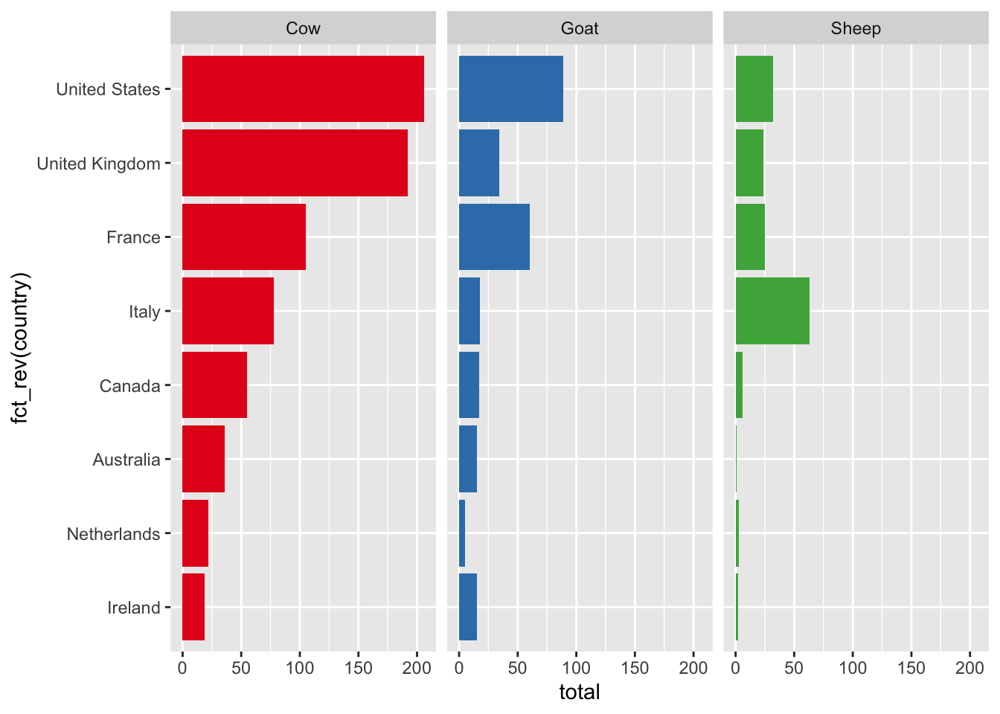
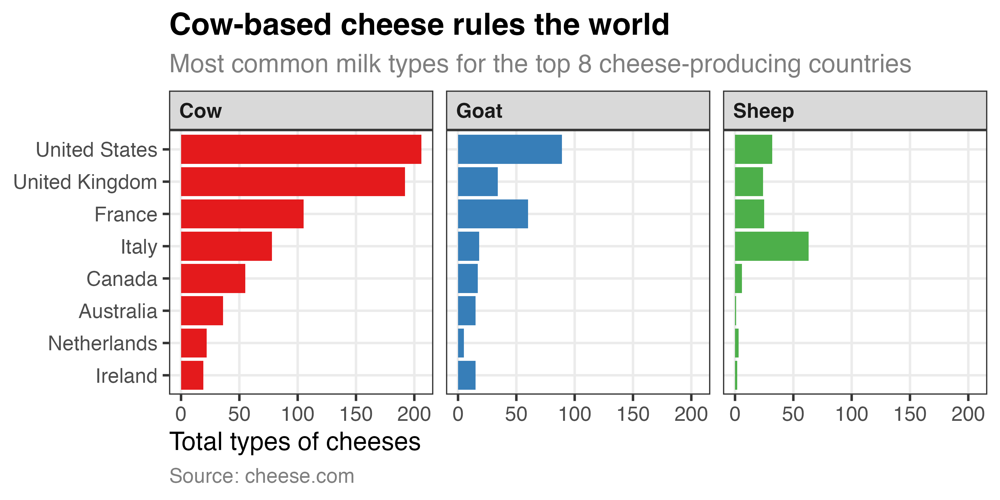

The code below loads and cleans the data, resulting in a data frame named cheeses_milk_country that contains the number of cheeses made by the top 8 cheese-producing countries, across three types of milk. You don’t need to modify anything in this chunk of code—you only need to run it.
library(tidyverse)# Load the full datacheeses_raw <-read_csv("data/cheeses.csv")# The milk and country columns contain multiple values, like "cow, goat" and # "Italy, France". separate_longer_delim() splits those into separate rows # based on the ",", so that "cow, goat" would turn into one row for cow and one # for goat, and so oncheeses <- cheeses_raw |>separate_longer_delim(milk, delim =", ") |>separate_longer_delim(country, delim =", ") |># Technically England, Scotland, GB, and the UK are all different things, but# for the sake of visualization, we can lump them all togethermutate(country =case_match(country,"England"~"United Kingdom","Great Britain"~"United Kingdom","Scotland"~"United Kingdom",.default = country ))# Find the most common milk typestop_milk_types <- cheeses |>group_by(milk) |>summarize(total =n()) |>filter(total >100)# Find the most common countriestop_countries <- cheeses |>group_by(country) |>summarize(total =n()) |>filter(total >30)# Calculate the number of milk types across the most common countriescheeses_milk_country <- cheeses |>filter(milk %in% top_milk_types$milk, country %in% top_countries$country) |>group_by(milk, country) |>summarize(total =n()) |>ungroup() |># Capitalize the milk typesmutate(milk =str_to_title(milk)) |># Sort by country and milk type and lock in the order for better plotting arrange(desc(total), milk) |>mutate(across(c(country, milk), \(x) fct_inorder(x)))cheeses_milk_country
# A tibble: 24 × 3
milk country total
<fct> <fct> <int>
1 Cow United States 206
2 Cow United Kingdom 192
3 Cow France 105
4 Goat United States 89
5 Cow Italy 78
6 Sheep Italy 63
7 Goat France 60
8 Cow Canada 55
9 Cow Australia 36
10 Goat United Kingdom 34
# ℹ 14 more rows
Base plot
Here’s a basic bar chart showing the counts of countries and milk types. It’s stored as an object named base_plot:
base_plot <-ggplot( cheeses_milk_country,aes(x = total, y =fct_rev(country), fill = milk)) +geom_col() +guides(fill ="none") +# These colors come from ColorBrewer 2:# https://colorbrewer2.org/#type=qualitative&scheme=Set1&n=3scale_fill_brewer(palette ="Set1") +facet_wrap(vars(milk))base_plot

Recreate nice plot
Run the code chunk below to see a plot.

Your job is to use labs() and theme() to recreate this plot:
For your extension, forget all the wonderful CRAP design principles you just learned and try your hardest to make the ugliest plot in the world. Take base_plot and create the worst, ugliest, least CRAPful plot ever.
Change the colors, modify the theme, add labels, etc. and make this ugly. You can leave the geom_col() as is, or you can mess with it too (or even change it to a pie chart or heatmap or something if you feel up to it).